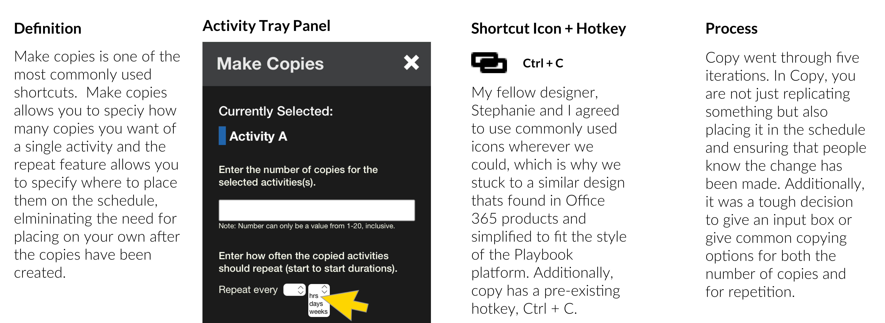
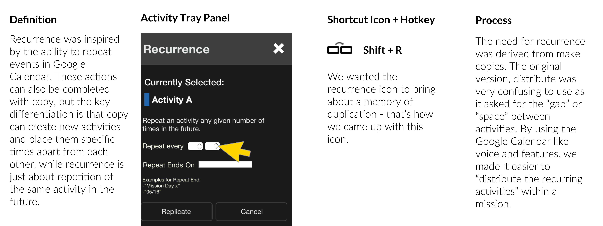
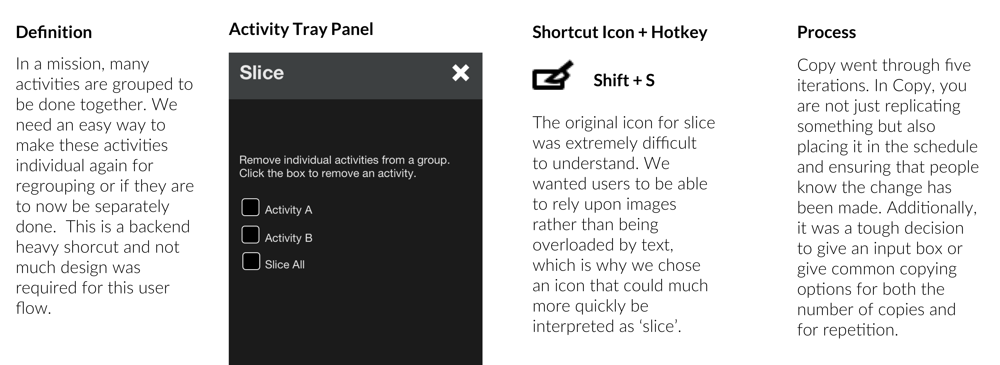

01 Overview
Stephanie Webster (Design), Fernanda Moreno (SWE), Mihir Borkar (SWE), Derek Gubbens (SWE)
10 Weeks, Summer 2019
Sketch, Photoshop, InDesign
UX Mobile Design + Branding + Strategic Pitch
Create hotkeys and shortcuts for the most implemented actions in the Playbook, evaluate and redesign the system structure of the Playbook iPad application.
Playbook is an intuitive software designed to help astronauts edit certain adjustable activities in space or on other analog missions, without needing to rely on mission control everytime there is a small change. This has a useful application in missions where there is a time lag.
The system design updates and UI changes I made will be implemented for the next NASA NEEMO analog mission in Summer 2020. The hope is the software can ultimately be used for the Mars 2020 mission!
02 Solution
My original assignment for this project was mostly UI changes (hotkeys, shortcuts). Pretty quickly, I noticed that the Playbook system wasn't as efficient as it could be. My final concept consisted of both UI changes but also cleaning up the overall system design.

The proposed user flow cuts the number of clicks by 44%! Although it's only a few clicks change per action, it easily adds up as crew members are constantly changing their schedules throughout spaceflight. The key changes were repurposing the activity tray as a space where actions can also occur to activities and not just as an informational space. This eliminated the need for pop-ups and the like. Additionally, cutting the preferences to the bare minimum really helped in saving clicks (for example having an entry rather than click through a long list of numbers).
Hotkey/Shortcut Videos
There are common shortcuts astronauts use on board a mission. Our goal was to reduce the time required go through these actions through buttons and more efficient action flows.
Make Copies
Recurrence
Slice
03 Approach
Initial Research
A visual interpretation of Playbook: an iPad application used to create convenience and independence in editing mission activities.

My research began with learning about the use cases of Playbook, the current features, and the way the current interface works. I played around with the tester site for problem discovery.


System Design
As I was playing around with the tester site, I noticed that it took a considerable number of clicks to commit to a certain action. I noticed this had a lot to do with the design of the Playbook system, specifically having an action tray - a tray that pops out when you need to make edits to the schedule. Before going into my main tasking, I decided to see if we could clean up the user flow of editing something.


Shortcut Flows
There were three shortcut flows that I worked on during the internship: Copy, Distribute (later renamed Recurrence), and Slice. I also worked on making multiselect easier (changing multiple activities), which you can view in my Internship Final Presentation linked below.
Copy

Recurrence

Slice

Poster Presentation
These are posters we used at the NASA Intern Research Symposium - NASA HUNCH was my other project during the summer (website redesign). Feel free to checking out my Medium for more information!
04 Future Steps + Reflection
Currently, the work is being implemented, so the future steps would be to ensure that everything is deployed successfully. The site is currently being worked on and the changes on Playbook are going to be implemented for the next NEEMO mission. This was my first UX internship and the first time I actually implemented my designs beyond the classroom. Therefore, there was a huge learning curve for me in terms of being able to work directly with software engineers on implementation in an Agile environment. What I realized is that things often have to be spelled out or extremely pixel perfect and specified for a software engineer to carry out a design exactly as it is meant to be. Outside of improving my design skills, working with JIRA and understanding how to document interactions and specifications were some of the most valuable things I learned during this internship.
This summer, I had the incredible opportunity to be a UX Designer for the SPIFe (Scheduling and Planning System for Exploration) team at the NASA AMES Research Center. I'm going to take a deep dive into one of my projects: Playbook. Feel free to peruse my account for more information on my Internship! The team had a work process similar to that of a startup embedded within a larger organization. Over the summer, I grew my technical design knowledge and was able to learn how to work with software developers in an agile development environment.Pictures from the Summer